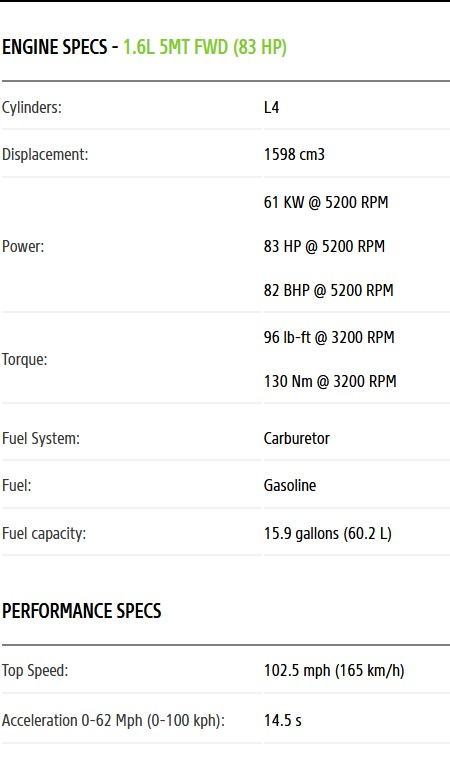

Nissan Bluebird (510)
The third generation Datsun Bluebird 510 was rolled out in August 1967. It started with sedans of 2 doors / 4 doors and station wagons / vans of 5 doors. The engine variation was 1.3-liter L13 of inline 4-cylinder OHC, and 1.6-liter L16 to be mounted on 1600SSS (Super Sport Sedan).
